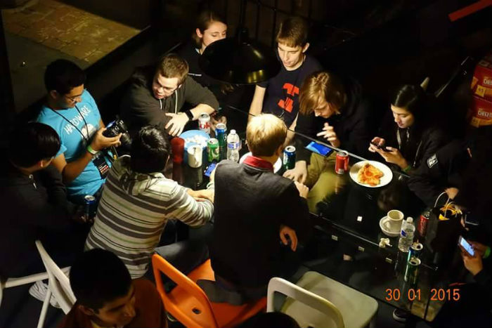

One Year of Tim and Rachel
Once upon a time there was a Tim and Rachel. Rachel liked to capture people in their natural habitats so she took this unsuspecting photo of Tim just before she left but ofc Sophia tots thought it was of her instead bc ayy lmao.
Rachel was suspiciously intrigued by Tim and just assumed they would be best friends. She decided to friend him and explore every corner of his brain because honestly anyone that likes these sexy guys is going to be her friend.
Rammstein tho
They spent a lot of time talking about everything and nothing. They shared in their sad childhood stories and all the ways that made them emo and edgy. Rachel spent a lot of time measuring distance between them and knew the only way to fix this was to force Tim onto Snapshit.
you are spending a lot of time thinking about how distant we are
whats going on rachel? :))
I'm traveling
Not towards you
Duh
Rachel and Tim traveled to many places together. She brought him along to Hackcon II in New York and wished all the time he was there. Was Rachel playing Evil Apples or sending a photo of pizza to Tim? You decide.
Hilarious
And also eerily beautiful
Tim also brought Rachel to work every day, whether or not he liked it. They played with chalk, played hide n seek, ate food, wrote code, and did homework all the time. Sometimes, when they were lucky, their good friend Mike Shinoda would visit. Rachel cried and Tim was like, "Sup. I liked Reanimation?"
Mike: That's cute.
Oh, and there was some Hearthstone lol
This will all be over soon and you can sleep and hearthstone with me forever
...and some annoying box.
But as it turned out, #notallboxes and Rachel sent special gifts to Tim so that he could feel Normal sometimes, too. Neighbear was happy to be in Tim's hands and really loved their journey to work together. It was the most adorable thing in the entire world.
♥♥♥♥♥♥
Then one warm July Sunday, IRL happened. Rachel got lucky and was selected to go to Hackcon III Timland. Rachel and Tim awkwardly became reacquainted, ate French and Italian food, had too many cheeseburgers, visited parks, flew in a plane, drove around in a car, somehow took a selfie, and shared many memories.
Just becuase I'm younger doesn't mean I know how to take a selfie!!! This is Austin's job!
Rachel never wanted to leave Tim, it would make her very sad. To make up for it, she always wrote him THE LONGEST NOTES EVER WRITTEN because she is apparently an aspiring novelist. But that was okay. Rachel would run into Tim again. He stopped by St. Louis and endured a sea of screaming children AND HAD STEAK N SHAKE FOR THE FIRST TIME although it was not quite the same. It was still great and Rachel loved watching Tim try to curl up in a ball and fall asleep in her car.
"How big are their burgers?" "lol not that big"
Once Rachel believed she would never see Tim again, unbeknownst to her, Gina came to the rescue and made Rachel's part time job recruiting UC Berkeley students visiting Tim. Rachel and Tim went on Oakland/Berkeley adventures destroying the engine of a tiny Toyota Yaris, hiking a park full of bears, and eating at a Jewish deli.
Rachel didn't want Tim to leave, but he had to get on the bus and go home.
Don't do the right thing pls
But not everything was sad. One day Tim finally met Austin. Oh wait. He also had a lot of fun sneaking around Andymom at work. And if you thought it was enough for Tim and Rachel to be friends, you were wrong. Their iPhones became best friends, too.
"Can you guess which phone is yours?" "It's still a different color on the back."
Time would pass and Rachel would get lucky again. All her dreams came true when a fellow storming hackathon lady offered her a GHC ticket just days before the conference. She would stalk all the iOS developers, hang out with Grace, and awkwardly sneak around with Tim and pretend she didn't have open seats next to her for Sophia. #reserved
Sophia: Where was I :'(
...and Rachel got Tim tissues damnit.
Oh, also
Eventually, Rachel decided to give zero fucks...
...and visit just Tim for three days.
They went through happy times and sad times, hard times and easy times, starving times and burrito times. It was pretty clear that there would be no games (lol literally) and they would share all their feelings in the form of hugs and stuffed animals. There were no imaginary friends that could save them now, only real Rachel and Tim could take themselves to the Square party, so they did.

Not a photo of Rachel and Tim from the photobooth
...and they also found Andy lol
In the end (it doesn't even matter?), Rachel and Tim made the party, but they also made this :/
One year had passed and Rachel was satisfied. She felt very lucky to have gotten to know Tim from the inside out. She knew their friendship was magical because no matter the (2000+ mile) distance or medium of communication, they would always feel close. Rachel loves Tim very much and knows that the day he visits she will squeeze him into a million pieces, tape him back together again, and eat SnS. ♥
I was not prepared for this much friendship